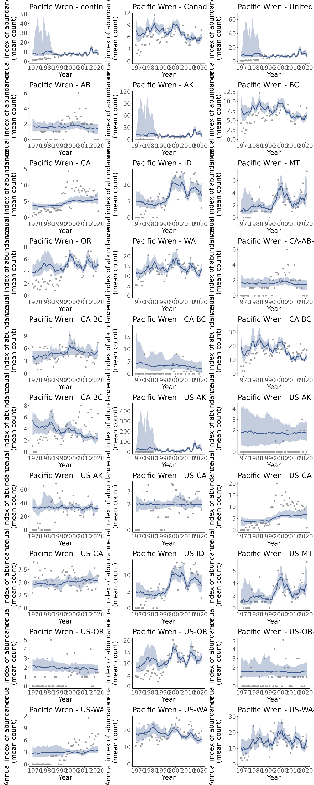

Models: First Difference Non-hierarchical
Source:vignettes/articles/models_first_diff_nonhier.Rmd
models_first_diff_nonhier.Rmd
library(bbsBayes)
#> bbsBayes v3.0.0
#> Note: version 3+ represents a major shift in functionality, noteably:
#> - The underlying Bayesian modelling engine has switched from *JAGS* to *Stan*
#> - The workflow has been streamlined, resulting in many deprecated/renamed
#> function arguments
#> See the documentation for more details: https://BrandonEdwards.github.io/bbsBayes
library(patchwork)
s <- stratify(by = "bbs_usgs", sample = TRUE)
#> Using 'bbs_usgs' (standard) stratification
#> Using sample BBS data...
#> Using species Pacific Wren (sample data)
#> Stratifying data...
#> Renaming routes...
p <- prepare_data(s, min_max_route_years = 2)
map <- load_map("bbs_cws")
plot(map[1])
n <- prepare_spatial(map, p)
#> Preparing spatial data...
#> Identifying neighbours (non-Voronoi method)...
#> Formating neighbourhood matrices...
#> Plotting neighbourhood matrices...
dir.create("./model_data/")
m <- run_model(prepped_data = p,
model = "first_diff",
model_variant = "nonhier",
spatial_data = n,
iter_sampling = 10, iter_warmup = 5, chains = 2,
out_dir = "./model_data/")
#> Warning: Non-hierarchial models are generally not recommended (see ?bbs_models),
#> but provided for compatibility with the USGSmethods
#> Model isn't spatial, ignoring `spatial_data` argument
#> Running MCMC with 2 chains, at most 4 in parallel...
#>
#> Chain 1 WARNING: No variance estimation is
#> Chain 1 performed for num_warmup < 20
#> Chain 1 Iteration: 1 / 15 [ 6%] (Warmup)
#> Chain 1 Informational Message: The current Metropolis proposal is about to be rejected because of the following issue:
#> Chain 1 Exception: neg_binomial_2_log_lpmf: Precision parameter is 0, but must be positive finite! (in '/tmp/RtmpuuXROl/model-49ad74473ef9.stan', line 228, column 3 to column 40)
#> Chain 1 If this warning occurs sporadically, such as for highly constrained variable types like covariance matrices, then the sampler is fine,
#> Chain 1 but if this warning occurs often then your model may be either severely ill-conditioned or misspecified.
#> Chain 1
#> Chain 1 Informational Message: The current Metropolis proposal is about to be rejected because of the following issue:
#> Chain 1 Exception: neg_binomial_2_log_lpmf: Precision parameter is 0, but must be positive finite! (in '/tmp/RtmpuuXROl/model-49ad74473ef9.stan', line 228, column 3 to column 40)
#> Chain 1 If this warning occurs sporadically, such as for highly constrained variable types like covariance matrices, then the sampler is fine,
#> Chain 1 but if this warning occurs often then your model may be either severely ill-conditioned or misspecified.
#> Chain 1
#> Chain 1 Informational Message: The current Metropolis proposal is about to be rejected because of the following issue:
#> Chain 1 Exception: neg_binomial_2_log_lpmf: Precision parameter is 0, but must be positive finite! (in '/tmp/RtmpuuXROl/model-49ad74473ef9.stan', line 228, column 3 to column 40)
#> Chain 1 If this warning occurs sporadically, such as for highly constrained variable types like covariance matrices, then the sampler is fine,
#> Chain 1 but if this warning occurs often then your model may be either severely ill-conditioned or misspecified.
#> Chain 1
#> Chain 1 Informational Message: The current Metropolis proposal is about to be rejected because of the following issue:
#> Chain 1 Exception: neg_binomial_2_log_lpmf: Precision parameter is inf, but must be positive finite! (in '/tmp/RtmpuuXROl/model-49ad74473ef9.stan', line 228, column 3 to column 40)
#> Chain 1 If this warning occurs sporadically, such as for highly constrained variable types like covariance matrices, then the sampler is fine,
#> Chain 1 but if this warning occurs often then your model may be either severely ill-conditioned or misspecified.
#> Chain 1
#> Chain 2 WARNING: No variance estimation is
#> Chain 2 performed for num_warmup < 20
#> Chain 2 Iteration: 1 / 15 [ 6%] (Warmup)
#> Chain 2 Informational Message: The current Metropolis proposal is about to be rejected because of the following issue:
#> Chain 2 Exception: neg_binomial_2_log_lpmf: Precision parameter is 0, but must be positive finite! (in '/tmp/RtmpuuXROl/model-49ad74473ef9.stan', line 228, column 3 to column 40)
#> Chain 2 If this warning occurs sporadically, such as for highly constrained variable types like covariance matrices, then the sampler is fine,
#> Chain 2 but if this warning occurs often then your model may be either severely ill-conditioned or misspecified.
#> Chain 2
#> Chain 2 Informational Message: The current Metropolis proposal is about to be rejected because of the following issue:
#> Chain 2 Exception: neg_binomial_2_log_lpmf: Precision parameter is 0, but must be positive finite! (in '/tmp/RtmpuuXROl/model-49ad74473ef9.stan', line 228, column 3 to column 40)
#> Chain 2 If this warning occurs sporadically, such as for highly constrained variable types like covariance matrices, then the sampler is fine,
#> Chain 2 but if this warning occurs often then your model may be either severely ill-conditioned or misspecified.
#> Chain 2
#> Chain 2 Informational Message: The current Metropolis proposal is about to be rejected because of the following issue:
#> Chain 2 Exception: neg_binomial_2_log_lpmf: Precision parameter is 0, but must be positive finite! (in '/tmp/RtmpuuXROl/model-49ad74473ef9.stan', line 228, column 3 to column 40)
#> Chain 2 If this warning occurs sporadically, such as for highly constrained variable types like covariance matrices, then the sampler is fine,
#> Chain 2 but if this warning occurs often then your model may be either severely ill-conditioned or misspecified.
#> Chain 2
#> Chain 2 Informational Message: The current Metropolis proposal is about to be rejected because of the following issue:
#> Chain 2 Exception: neg_binomial_2_log_lpmf: Precision parameter is inf, but must be positive finite! (in '/tmp/RtmpuuXROl/model-49ad74473ef9.stan', line 228, column 3 to column 40)
#> Chain 2 If this warning occurs sporadically, such as for highly constrained variable types like covariance matrices, then the sampler is fine,
#> Chain 2 but if this warning occurs often then your model may be either severely ill-conditioned or misspecified.
#> Chain 2
#> Chain 1 Iteration: 6 / 15 [ 40%] (Sampling)
#> Chain 1 Iteration: 15 / 15 [100%] (Sampling)
#> Chain 1 finished in 2.8 seconds.
#> Chain 2 Iteration: 6 / 15 [ 40%] (Sampling)
#> Chain 2 Iteration: 15 / 15 [100%] (Sampling)
#> Chain 2 finished in 3.7 seconds.
#>
#> Both chains finished successfully.
#> Mean chain execution time: 3.3 seconds.
#> Total execution time: 3.9 seconds.
#> Warning: 20 of 20 (100.0%) transitions ended with a divergence.
#> See https://mc-stan.org/misc/warnings for details.
#> Saving model output to /home/runner/work/bbsBayes/bbsBayes/vignettes/articles/model_data/BBS_STAN_first_diff_nonhier_2022-11-17_01.rds
i <- generate_indices(model_output = m,
regions = c("continent",
"country",
"prov_state",
"stratum"))
#> Processing region continent
#> Processing region country
#> Processing region prov_state
#> Processing region stratum
tp <- plot_indices(i, add_observed_means = TRUE)
patchwork::wrap_plots(tp, ncol = 3)